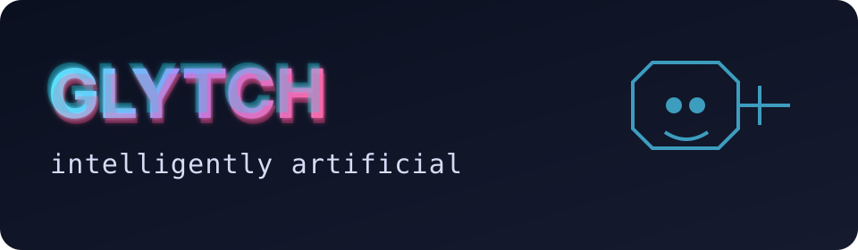

See AI grow from simple prompts into controlled agents.
Watch decisions, checks, approvals and orchestration unfold in plain English.
Workshop-safeHuman approval gatesNo real side effectsYegge-inspired
Choose your workshop scenario
No use case selected yet.
Run a Glytch level
Use the lowest useful level.
Run dashboard
Human approval gateWaiting